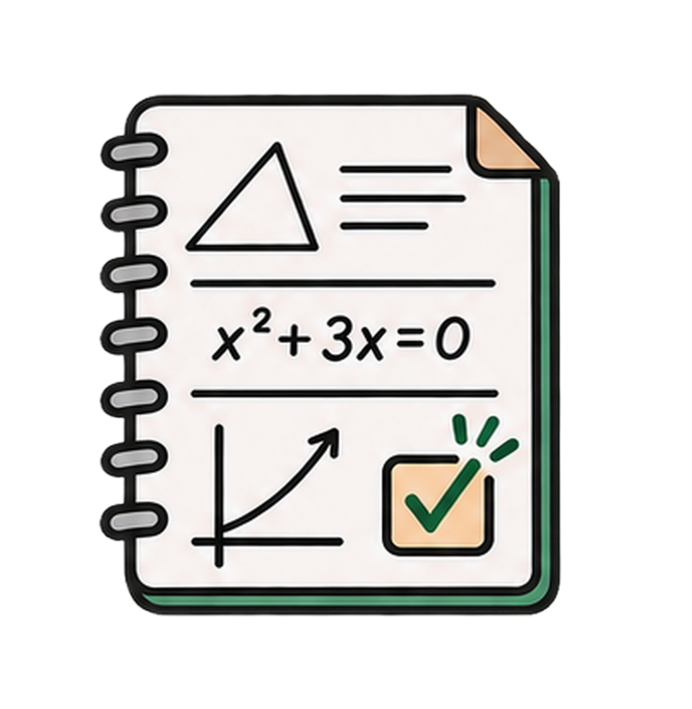
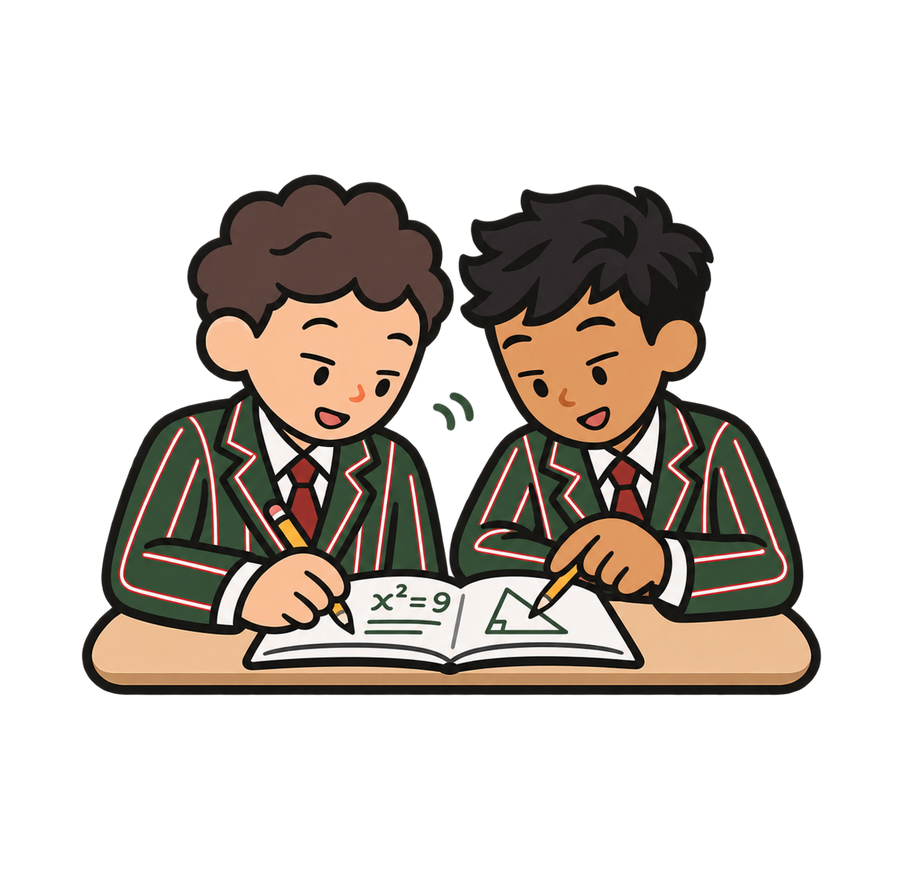
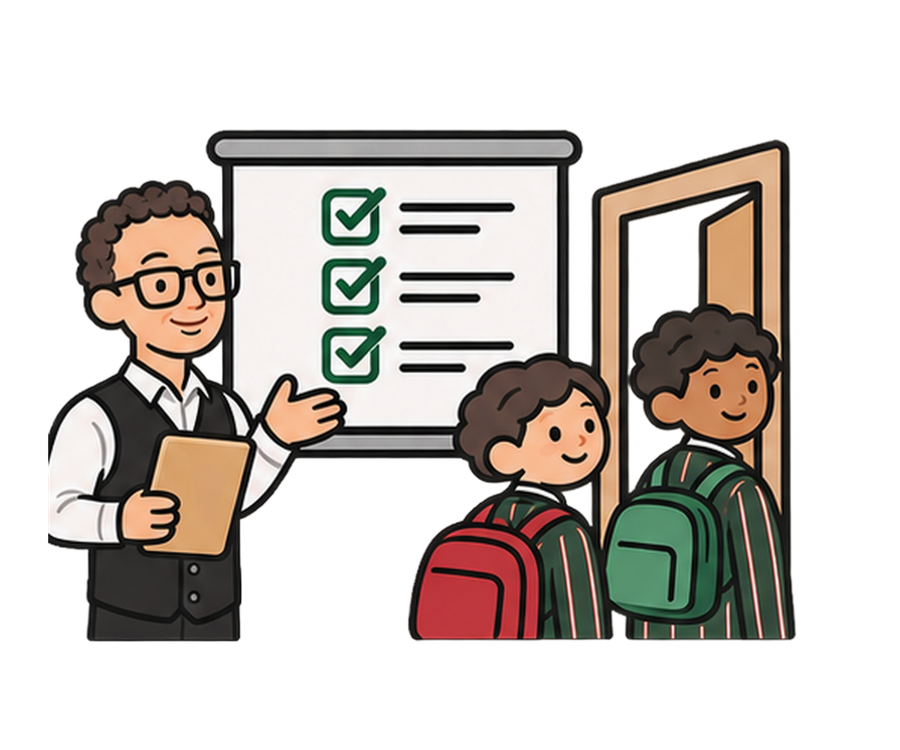

Be respectful
Look after people, gear and the space. Use names and manners. Students call me Mr McIntosh, not Sir.
Mathematics classroom
A calm, respectful mathematics class where everyone knows what to do, learning time is protected, and effort is visible.
This page is for parents and caregivers. It explains the routines students practise every lesson in Mr McIntosh’s class, what I expect, and how I respond when something goes wrong. These are routines, not slogans: we learn them, practise them, and come back to them until they are automatic.
Three everyday expectations sit above the lesson routines. They are how we treat one another in this room. They are class values, not a copy of the school’s official wording.
Look after people, gear and the space. Use names and manners. Students call me Mr McIntosh, not Sir.
Have a go, show your thinking, and learn from mistakes. Ask for help when you need it. Answers alone are not enough — the working matters.
Arrive calm, follow the routines, and stay with the work so everyone can concentrate. The nine routines below make that possible.
Every lesson follows the same shape: enter, learn, and leave. Students have assigned seats. I greet them at the door, and I dismiss them at the end — not the bell.
Enter
Greet, stand at the assigned desk, then start the Do Now.
Learn
Hands Mode, one clear page of working, and quiet maths talk.
Exit
Show the best page, pack when invited, leave when dismissed.
Enter — calm and ready
Learn — focused and productive


Exit — organised and dismissed

This is the attention routine. I usually give a short warning first — for example, thirty seconds to finish a sentence. Then I raise one hand and put a finger to my lips. That raised hand is the signal. A timer, two claps or a spoken cue may support it, but they do not replace it. I wait until the class is ready before I speak.
“Hands Mode: voices down, eyes up.”
These expectations sit alongside the nine routines. A few details still need to be lined up with school policy before this page is final.
A student who arrives late waits quietly at the door. I acknowledge them when it will not interrupt teaching. They come in silently, go to their assigned seat, and join the task on the board. I follow up about the lateness privately, later. There is no public explanation or apology required at the door.
I correct the behaviour, not the person. Reminders are calm, brief and specific. Longer conversations happen privately, away from an audience. I also notice and name the behaviour I want when I see it — that everyday standard is the recognition in this class.
I restate the expected behaviour once, clearly, and give a moment to reset. For example: “Voices off. Eyes up. Hands empty.”
If the standard is not met, we practise the routine again. The focus stays on what is needed now, not on a public argument.
After class, we talk away from an audience: What happened? What was the impact? What happens next?
If learning time has been deliberately lost, it may be made up, in line with school policy, including transport and supervision.
Repeated or more serious issues follow the school’s behaviour process. I will contact home when that is the right next step.
I want parents and caregivers to know how the room runs, and to be able to reach me. A few important pieces are not yet written into these classroom routines, and I would rather leave them blank than invent a policy.
You can email me at will@wmm.co.nz. If the school prefers that class matters go through its own email or parent portal, please use that channel.
Still to add, once confirmed: homework expectations; what to do after an absence and where to find missed work; NCEA authenticity and AI use for senior classes; and the usual way I will be in touch with home. Emergency procedures follow the school’s signage and drills, not this page.